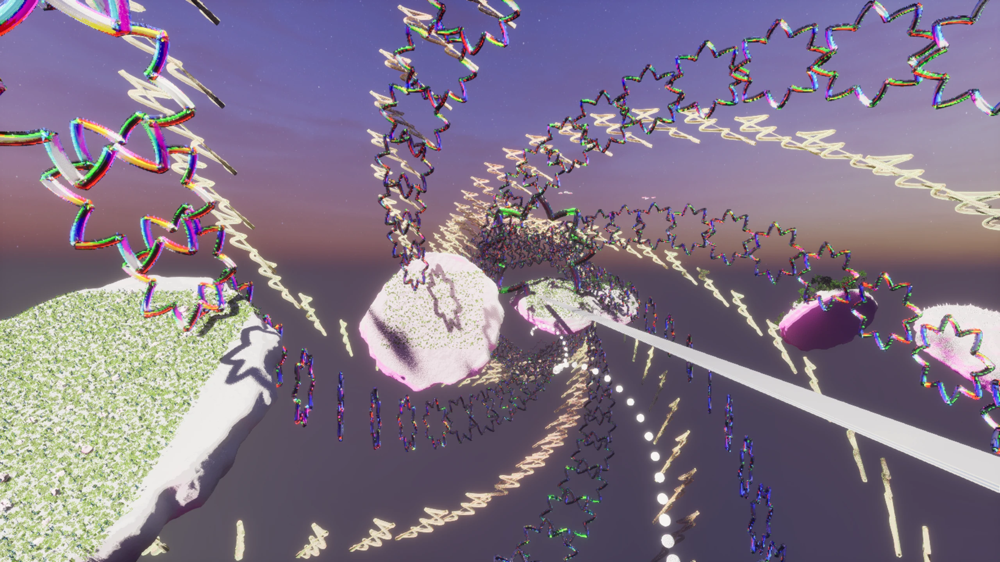
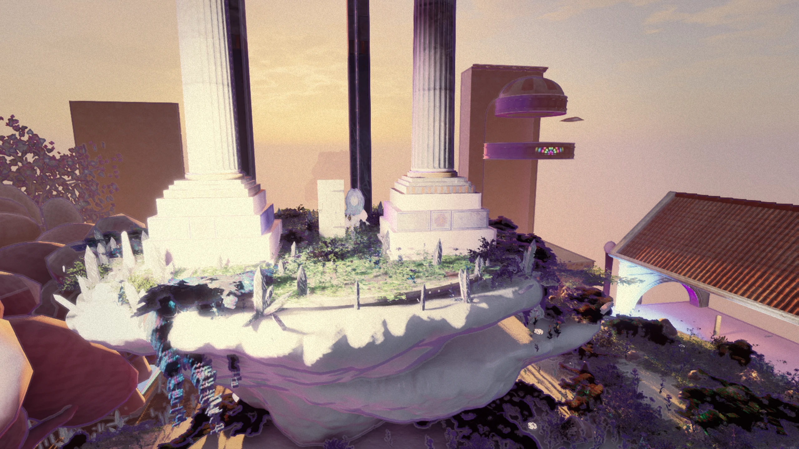
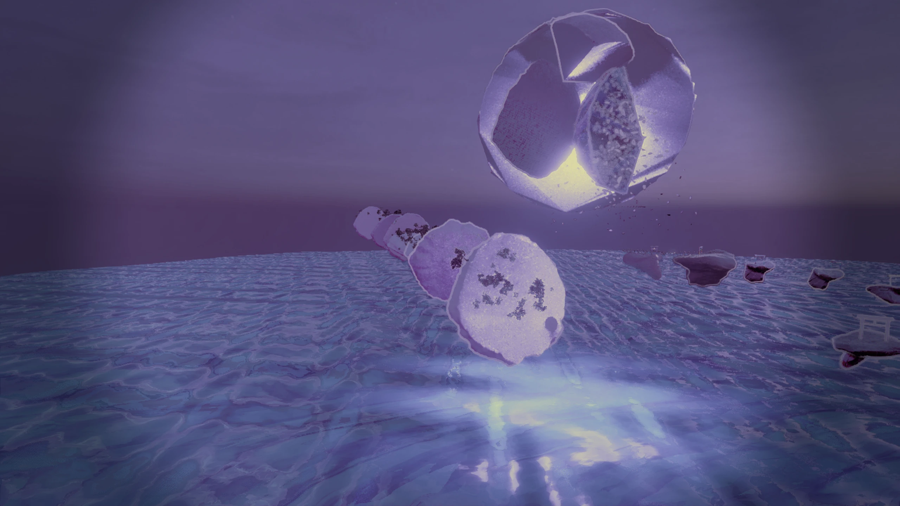

Melodia
Melusina.
A musical fantasy world where procedural environment art, stylized materials, and experiments in resonance meet.

Kaleido Nave — Prismatic colonnade
Architectural composition · prismatic materials · authored environment

Melusina Morning — Pastoral meadow
Procedural environment art · atmospheric lighting · world assembly

Sakura Dream — Ink shrine
Stylized material language · composition · colour direction

Fallen Moon — Lunar archipelago
World-scale composition · lighting · environmental storytelling
Music
becomes form.
The environments above are selected authored renders—not claims that each scene already reacts to live music. Cymatics is the research direction connecting the pieces.
Stylized material lookdev, lighting, PCG scene assembly and playable-world presentation.
Procedural geometry, repeatable asset workflows, geometry nodes and animation preparation.
Chladni-inspired pattern research, pitch-linked visual identities and music-responsive presentation.
Recorded in Unreal.
A short recorded showcase of runtime UI and Niagara motion. This is supporting real-time evidence, not a demonstration of completed cymatics-to-world propagation.
View recorded motion proof ↗
Where
from here?
Looking for technical direction, a realistic capstone scope, and a sustainable path for this kind of creative work.
- Which visual or technical strengths should lead the capstone?
- How would you scope one convincing music-to-material-to-world demonstration?
- Where might this practice fit professionally, and what boundaries make collaboration sustainable?